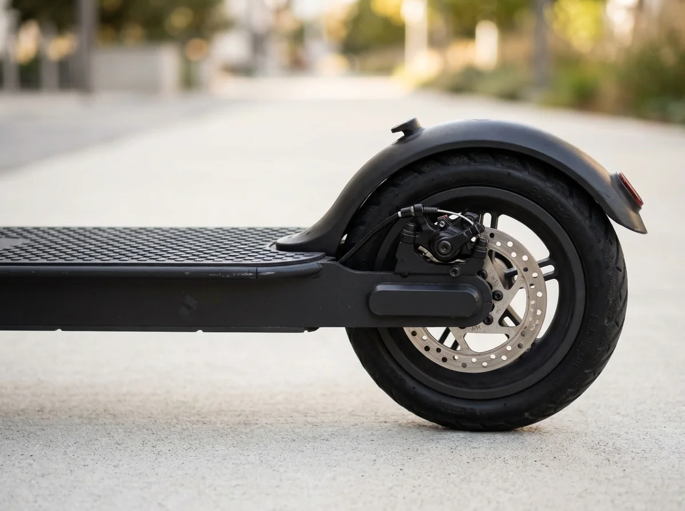

Technique
Batterie de trottinette électrique : longévité, pièges de l’hiver et bonnes pratiques
C’est le cœur de votre engin et l’élément le plus cher à remplacer : la batterie représente près de la moitié de la valeur d’une trottinette électrique. Combien d’années peut-elle réellement tenir ? Pourquoi votre autonomie fond-elle en hiver ? Voici tout ce que vous devez savoir pour la préserver au maximum.

En bref
- Une batterie Li-ion de qualité supporte entre 500 et 800 cycles complets, soit 15 000 à 25 000 kilomètres de trajet.
- En dessous de 5 °C, les réactions chimiques ralentissent : vous perdez naturellement 20 à 30 % d’autonomie.
- Ne chargez jamais une batterie encore glacée : laissez-la toujours revenir à température ambiante avant de brancher le câble.
- Pour maximiser la longévité, maintenez la charge entre 20 % et 80 % au quotidien lors de vos trajets de semaine.
Combien de temps dure une batterie de trottinette ?
Sur les modèles récents comme l’Agaru Smart (499 Wh) ou l’Agaru Ultra (768 Wh), le constructeur utilise des cellules lithium-ion cylindriques de type 21700 de haute densité énergétique. Ces accumulateurs sont donnés pour 500 à 800 cycles de charge complets avant que leur capacité ne descende en dessous de 80 % de son niveau d’origine.
Concrètement, sur une Agaru Ultra qui offre environ 50 à 60 kilomètres d’autonomie réelle par charge :
- 500 cycles représentent environ 25 000 kilomètres au compteur.
- Pour un utilisateur urbain moyen parcourant 10 kilomètres par jour ouvré (environ 2 200 km par an), la batterie conserve d’excellentes performances pendant plus de 5 à 7 ans.
Ce qui tue prématurément une batterie, ce ne sont pas les kilomètres parcourus, mais les erreurs d’usage : la décharge profonde prolongée et les écarts thermiques extrêmes.
Pourquoi l’autonomie s’effondre en hiver ?
Dès que le thermomètre passe sous la barre des 5 °C, vous constatez que votre jauge de batterie descend plus vite que d’habitude. Ce n’est pas une panne : c’est une propriété physique du lithium.
Le froid augmente la résistance interne de l’électrolyte liquide au sein des cellules. Les ions lithium se déplacent moins vite, la tension chute plus vite sous l’effort du moteur et la batterie délivre moins d’énergie utile. Vous perdez couramment 20 à 30 % d’autonomie réelle à 0 °C par rapport à un trajet effectué par 20 °C.
La règle des 20 % - 80 % pour doubler sa durée de vie
Les batteries lithium-ion n’ont plus d’effet mémoire (inutile de les vider complètement avant de recharger, c’est même déconseillé). En revanche, elles subissent une forte tension mécanique lorsqu’elles sont pleines à 100 % ou vides à 0 %.
- Au quotidien : si votre trajet ne demande que 15 ou 20 km, vous n’avez pas besoin d’atteindre 100 % à chaque fois. Débrancher vers 80 % ou 90 % divise par trois la dégradation chimique des cellules.
- Ne laissez pas la trottinette à plat : si la jauge passe sous 10 %, rechargez dès votre arrivée. Laisser une trottinette déchargée à 0 % pendant plusieurs semaines dans une cave fait tomber les cellules en sous-tension critique : le circuit de sécurité (BMS) bloque alors définitivement la batterie.
- Stockage prolongé : si vous n’utilisez pas votre trottinette pendant les vacances d’été ou d’hiver, stockez-la avec un niveau de charge d’environ 50 à 60 %, dans un endroit tempéré et sec (entre 15 °C et 25 °C).
Combien coûte un changement de batterie ?
Si vous possédez votre trottinette, le remplacement d’un pack complet de 768 Wh hors garantie coûte entre 250 et 350 €, pièces et main-d’œuvre comprises. C’est souvent à ce moment-là que beaucoup d’acheteurs hésitent à jeter leur engin.
C’est l’un des atouts centraux de la formule d’abonnement Augment : la batterie fait partie des composants couverts par le service de réparation. Si la capacité de votre Agaru Ultra chute de façon anormale ou tombe en panne, le remplacement du bloc ou de la trottinette est entièrement pris en charge sans surcoût.
Ne craignez plus la panne de batterie
Avec le service tout compris d’Augment, l’usure de la batterie et les réparations sont incluses pendant toute la durée de votre location.
Les boutons vers augment.eco sont des liens partenaires : comment le site est financé.
Questions fréquentes
Peut-on laisser sa trottinette électrique branchée toute la nuit ?
Oui, les chargeurs modernes et le boîtier de gestion électronique (BMS) coupent automatiquement le courant une fois la charge complète atteinte. Il reste néanmoins conseillé de débrancher dès que le voyant passe au vert pour éviter les micros-cycles d’entretien.
Pourquoi la trottinette avance-t-elle moins vite quand la batterie est faible ?
La tension globale du pack diminue au fur et à mesure de la décharge. Le contrôleur réduit la puissance envoyée au moteur pour protéger les cellules contre la sous-tension.
Est-il possible d’augmenter la capacité de batterie de son Agaru Smart ?
Les châssis de l’Agaru Smart (499 Wh) et de l’Agaru Ultra (768 Wh) sont identiques, mais le pack batterie et le contrôleur sont calibrés en usine. Il n’est pas recommandé de modifier la batterie soi-même sous peine d’annuler les garanties et certifications.
Que faire de son ancienne batterie de trottinette ?
Les batteries lithium sont des déchets dangereux recyclables à plus de 70 %. Déposez-les gratuitement dans un point de collecte officiel Corepile ou Screlec, en déchetterie ou auprès de votre réparateur.
Sources
- Filière de recyclage des accumulateurs et batteries : Corepile France
- Batteries lithium-ion : conseils de sécurité et risques thermiques : INRS
- Données techniques batteries Augment : augment.eco/fr-fr/agaru-ultra
Prix relevés sur augment.eco (France). Notre méthode.